Sync your library to a real Rockbox iPod.
Your Navidrome, your iPod, your files. NaviBeat asks your own server to transcode the tracks and resize the cover art, lays the files out in folders Rockbox understands, and writes proper .m3u8 playlists with correct on-device paths. Nothing leaves your own server. Unlocking NaviSyncRock also installs the two NaviBeat themes below.
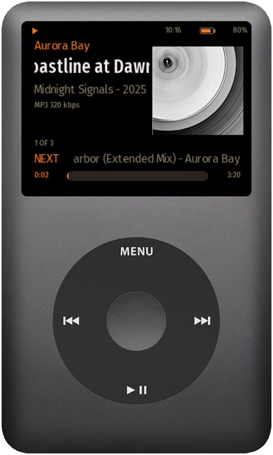
Four things to know about NaviSyncRock
Your server, your files
The music comes from your own Navidrome. Your server does the transcoding and art resizing. Nothing is uploaded anywhere, and no third-party service is involved.
Send-to, not sync
No background sync, no conflict resolution, no surprises. You right-click a song, album, artist, or playlist and choose Send to RockBox. It copies exactly what you picked.
Art that actually renders
Cover art is re-encoded to a baseline JPEG that Rockbox can read, sized for the iPod screen. This fixes the classic "big art will not show" problem on old hardware.
Read-back through Navidrome
Phase 2 reads plays and ratings back into your Navidrome, which forwards them per your own server config. NaviBeat never scrobbles directly to Last.fm.
Not just one brand
NaviSyncRock recognizes your RockBox player by name.
Sync always worked with any RockBox device: NaviBeat just looks for a RockBox folder on the drive. What changed is the device catalog. NaviSyncRock now names over 100 RockBox player models correctly in the sidebar, spanning more than a dozen brands, not just one.
- iriver
- SanDisk Sansa
- Sony Walkman (NW / NWZ)
- Samsung YP
- Creative Zen
- Cowon iAudio
- Toshiba Gigabeat
- Philips GoGear
- Olympus M:Robe
- FiiO
- Shanling
- HiBy
- AGPTEK
- Anbernic
- xDuoo
- iBasso
- And more, whatever RockBox itself supports
Recognizing the brand only changes what the sidebar and theme call your device: sync itself has always worked the same way on any RockBox player. A matching NaviBeat theme currently ships for six screen resolutions; more are on the way.
How it works
Plug it in, right-click, done.
Rockbox does not use the proprietary iTunes database. It plays files straight from the filesystem and builds its own tag database on the device. So this is an honest "transcode, re-encode art, copy into the right folders, write playlists" pipeline, not a reverse-engineered sync protocol.
Connect over USB
Plug in the Rockbox device. It mounts as a normal USB drive. One time, you grant NaviBeat access to it with a single click. After that, reconnecting is automatic, and a "RockBox Player" entry appears in the sidebar.
Right-click, Send to RockBox
On any song, album, artist, or playlist in your library, choose Send to RockBox. A progress sheet shows each track and can be cancelled at any time.
Your server transcodes
NaviBeat asks your own Navidrome to produce the audio in your chosen format and bitrate (MP3, AAC, Opus, or Vorbis) and to resize the cover art to a baseline JPEG the iPod can read.
Correct on-device paths
Files land as /Music/Artist/Album/Track with sanitized names, a cover.jpg per album, and playlists written as .m3u8 using paths from the device root, the way Rockbox expects.
Pick your quality
A dedicated Rockbox section in macOS Settings lets you choose format, bitrate, and cover-art size, plus what to do on duplicates: skip or overwrite. Set it once and forget it.
Browse and remove
Click the device to see what is on it, grouped All, Albums, Artists, and Playlists, in the same grid you already know. Remove anything you no longer want directly from there.
What it does · What it does not
A clean scope line, drawn on purpose.
NaviSyncRock is deliberately a one-way push of your own music, plus an optional metadata read-back in Phase 2. It is not a two-way sync engine, and it never touches anything but your own server and your own device.
What it does
- Sends music to the device, transcoded to MP3, AAC, Opus, or Vorbis at the bitrate you choose, with album art re-encoded so it renders.
-
Writes correct on-device paths and proper
.m3u8playlists, so browsing and playback just work. - Lets you browse and remove what is on the device, grouped All, Albums, Artists, Playlists.
- Reads plays and ratings back (Phase 2) into your Navidrome, which forwards them per your own server config.
What it does not do
- No two-way sync or conflict resolution. Send-to is intentional and predictable, not a background mirror.
- No direct scrobbling to Last.fm or ListenBrainz. All read-back goes through your Navidrome, honoring NaviBeat's standing policy.
- No firmware work. NaviBeat does not install or update Rockbox itself. Your device already runs Rockbox.
- Audio transfer stays one-way. Phase 2 reads back only metadata: plays, ratings, and playlist definitions, never audio files.
The macOS app
Your iPod, managed like a real music app
Plug in your Rockbox player and it shows up in the NaviBeat sidebar. Browse what is actually on the device, play it straight from the iPod with no server, sync your offline plays home, and fill in missing artwork. Real screens, no mockups.
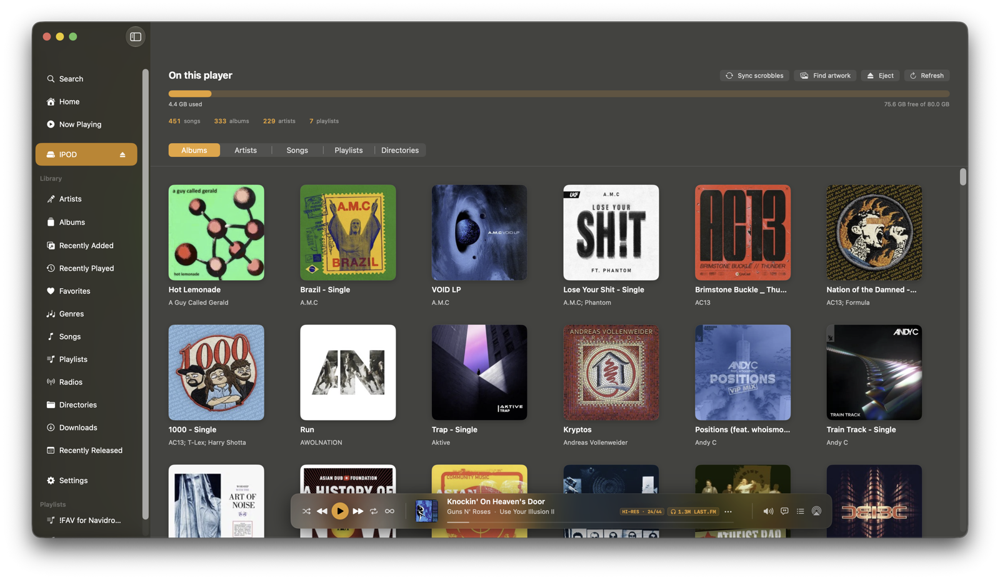
01Everything on your player, with art
A real album-art grid of what is on the device, with a storage bar and live counts. Browse it exactly like your library.
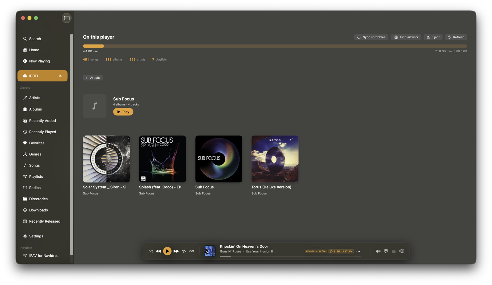
02Drill into any artist or album
Open an artist to see its albums, open an album to see its tracks, then press Play. All from the files on the iPod.
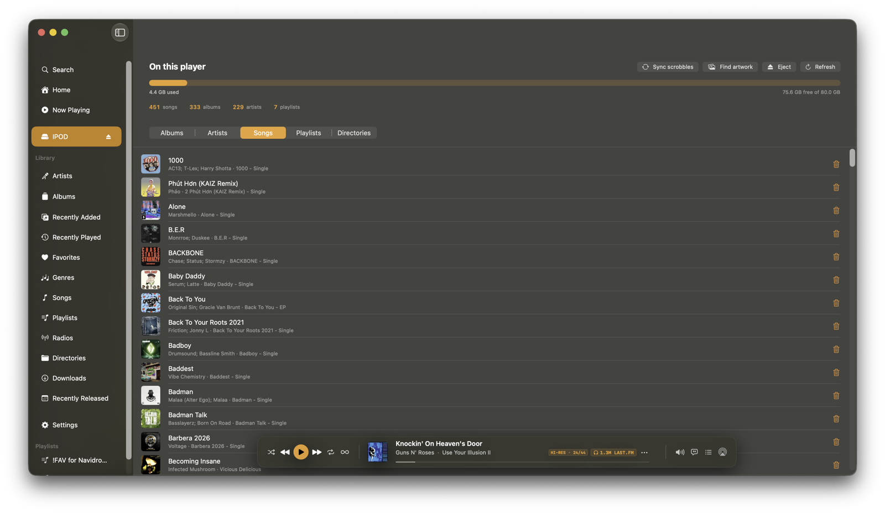
03Play straight from the iPod
Tap any song and it plays locally, with album-art rows and a now-playing indicator. Take your library to a friend who has NaviBeat, connect, and listen. No server required.
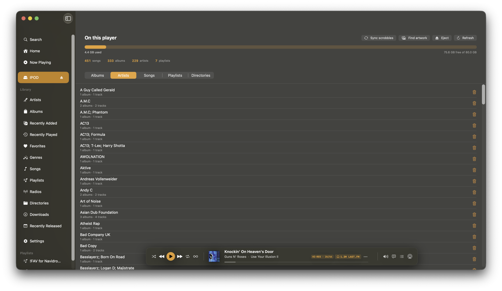
04Browse by artist, song or playlist
Tabbed browsing of exactly what is on the device: artists, songs, playlists, even the raw folders. Delete anything you do not want.
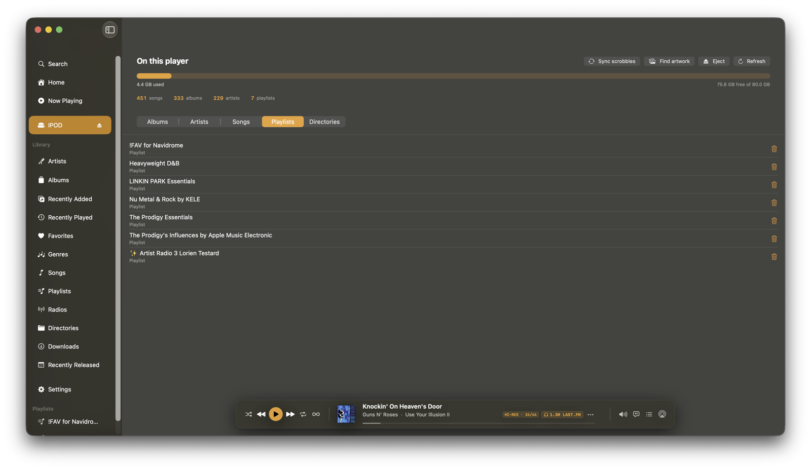
05Your playlists, on the device
The playlists you sent live on the player as standard files. Open one to see its tracks, or play the whole thing.
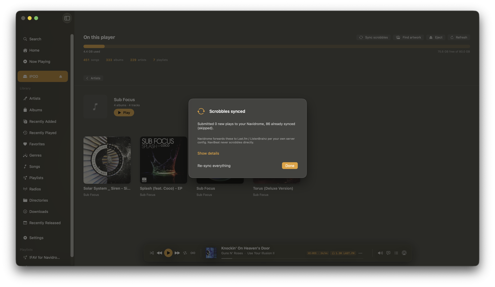
06Sync your offline plays home
Everything you played on the iPod, submitted back through your own Navidrome with a full report. De-duplicated, so a second sync never scrobbles anything twice.
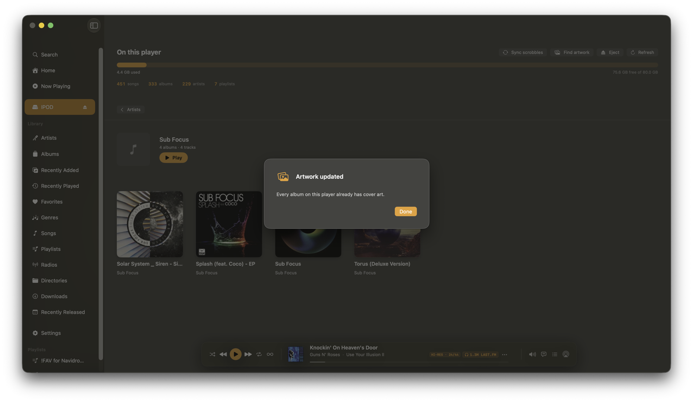
07Find missing artwork
One click fills in cover art for any album on the player that is missing it, from your Navidrome or public databases. It only writes cover files: your audio is never touched.
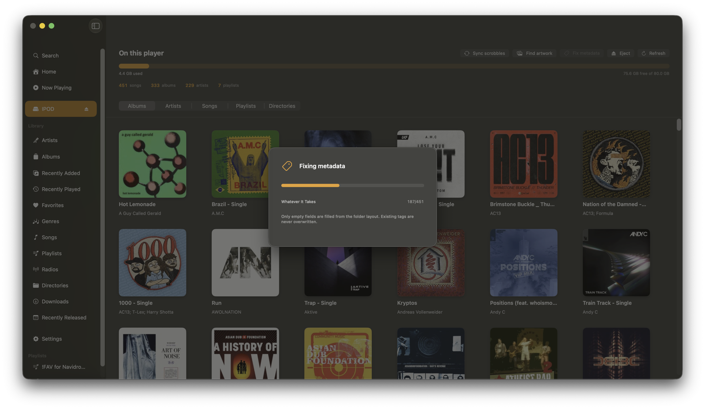
08Fix missing tags
Files with blank tags get their title, artist, album and track filled in from the folder layout, across every format. Only the empty fields, so your existing tags stay put.
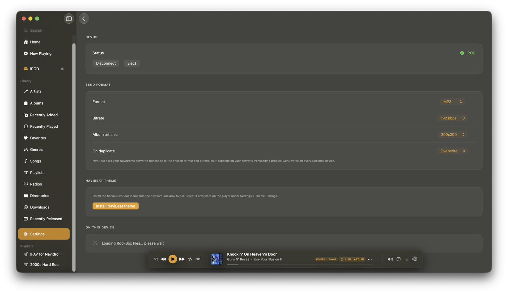
09Your rules for the send
Choose the codec, bitrate and album-art size, decide how duplicates are handled, and install the bonus NaviBeat theme with one button.
Actual screenshots of NaviSyncRock running in NaviBeat for macOS.
Unlocked with NaviSyncRock
Two themes for your iPod. Real screens.
Unlocking NaviSyncRock installs a NaviBeat theme on the device: pure black and copper, big readable type, and real album art. It ships as two skins over one shared core, switchable in the iPod's own Theme Settings.
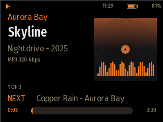
NaviBeat
The clean skin. Album art, track, artist, album and year, a thick scrubber that also shows volume, and a charging bolt.
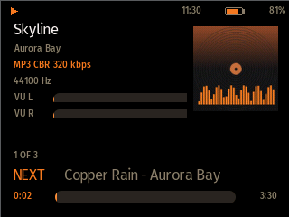
NaviBeat Audiophile
The data-dense skin. Codec, bitrate, sample rate in Hz, and a live left / right VU meter.
Actual theme renders from the Rockbox iPod simulator.
Roadmap & progress
Where NaviSyncRock is, transparently.
NaviSyncRock is a macOS feature in active development, not in the App Store build yet. This is the honest state of each piece as a timeline. A check means done and working on a real device. Orange means built or actively in development. Gray means planned and queued. No vapor.
Done · Working on a real iPod today
-
Done · On device
Two NaviBeat themes
Both skins (clean and Audiophile) are finished and tested on a real Rockbox iPod: album art, a thick scrubber, a charging bolt, orange menu icons, and a NaviBeat browser panel with live-baked library stats and storage. Every screen validated against Rockbox's own
checkwpsparser before it ever touches the device.
Phase 1 · The one-way push (built, pending App Store)
-
In development · Phase 1
Paid unlock + Rockbox settings
A one-time in-app unlock (around $5, separate from the base app) opens a dedicated Rockbox section in macOS Settings: format, bitrate, cover-art size, and what to do on duplicates. Includes Restore Purchases.
-
In development · Phase 1
Connect over USB
NaviBeat detects the mounted device, grants access with a single click, confirms it is really a Rockbox device, and shows a "RockBox Player" entry in the sidebar. Reconnecting later is automatic, no repeated prompts.
-
In development · Phase 1
Server-side transcode + art re-encode
Your own Navidrome produces the audio in the format and bitrate you chose, and resizes the cover art to a baseline JPEG that Rockbox can read. No third-party service, no uploads.
-
In development · Phase 1
Send to RockBox
Right-click a song, album, artist, or playlist to send it, with a cancelable progress sheet. Files are laid out as
/Music/Artist/Album/Trackwith acover.jpgper album, and playlists are written as.m3u8with device-root paths. -
In development · Phase 1
Browse and remove on device
Click the device to browse its contents grouped All, Albums, Artists, and Playlists, mirroring the library grid you already use. Remove items you no longer want, and affected playlists update.
Phase 2 · Read-back, through your Navidrome
-
Planned · Phase 2
Plays back into Navidrome
When you reconnect, NaviBeat reads the plays Rockbox logged on the device and, after you review and confirm, submits them to your Navidrome. Navidrome updates your play counts and forwards to Last.fm or ListenBrainz per your own server config. Nothing is submitted silently, and NaviBeat never scrobbles directly.
-
Planned · Phase 2
Ratings back into Navidrome
Star ratings you set on the iPod can be read back and written to your Navidrome, with a conflict policy you control: device wins, server wins, or only fill in the blanks. Reviewed and confirmed before anything is written.
-
Planned · Phase 2
Device-made playlists back into Navidrome
Playlists you built on the device can be resolved against your library and recreated in Navidrome, with any unmatched tracks listed plainly rather than guessed.
The two themes are done and working on a real iPod today. Phase 1 (the one-way push) is built and pending an App Store submission. Phase 2 (the metadata read-back) can follow in a later update without holding up Phase 1. NaviSyncRock is a planned one-time $4.99 unlock; the exact submission timing is still being set.
Why build this at all?
Because you should be able to own your music on real hardware. A Rockbox iPod is a beautiful, single-purpose player with physical buttons and long battery life. The only annoying part is getting your library onto it in a format and art layout it likes.
That is the gap NaviBeat closes on the Mac you already use. Your Navidrome, your iPod, your files. The transcoding happens on your own server, the files land in folders Rockbox understands, and the playlists carry the right paths. Privacy is the default, not a setting: nothing leaves your own server, and there is no third-party service in the loop.
GUI vs terminal
The one-click way to sync Navidrome to a Rockbox iPod.
Most ways to get a Navidrome or Subsonic library onto a Rockbox iPod are terminal scripts, rsync one-liners, or small homelab projects. They work if you enjoy editing config files. NaviSyncRock does it from a real Mac app, with the transcoding, album art, and playlists handled for you.
| Feature | NaviSyncRock | Terminal scripts / homelab |
|---|---|---|
| Interface | Right-click → Send to RockBox. No terminal, no config files. | Command line, flags, cron jobs, YAML. |
| Transcoding | Your Navidrome transcodes to the format and bitrate you pick. | You wire up ffmpeg and its flags yourself. |
| Album art | Re-encoded to a baseline JPEG that Rockbox actually renders. | Usually broken on old hardware, or manual. |
| Playlists | .m3u8 with correct device-root paths, written for you. | Hand-rolled or missing. |
| iPod themes | Two custom NaviBeat themes installed on unlock. | None. |
| Privacy | Your server, your files, over USB. No third party. | Depends entirely on the script. |
FAQ
Syncing Navidrome to a Rockbox iPod
Can you sync a Navidrome library to a Rockbox iPod?
Yes. NaviSyncRock, a paid feature of the NaviBeat macOS app, sends music from your own Navidrome server onto a Rockbox iPod. It asks your server to transcode each track to an iPod-friendly format and to resize the album art to a baseline JPEG Rockbox can read, then lays the files out in /Music/Artist/Album folders with a cover.jpg per album and writes .m3u8 playlists with correct on-device paths. It is a one-way send-to, not a two-way sync, and nothing leaves your own server.
Is there a GUI app to put Navidrome music on a Rockbox iPod, without the terminal?
Yes. Most ways to move a Navidrome or Subsonic library onto a Rockbox iPod are command-line scripts or small homelab projects. NaviSyncRock is a native Mac app feature: plug in the iPod, right-click a song, album, artist, or playlist, and choose Send to RockBox. No terminal, no scripts, no config files. It is part of NaviBeat on the Mac App Store.
How much does NaviSyncRock cost?
NaviSyncRock is a one-time in-app unlock inside NaviBeat, with a planned launch price of $4.99, separate from the base NaviBeat app (a $5.99 Universal Purchase for all Apple devices). The unlock also installs two custom NaviBeat iPod themes. It is in active development and not downloadable yet.
Does NaviSyncRock upload my music to a third party?
No. The music comes from your own Navidrome server, your own server does the transcoding and art resizing, and the files are written directly to your iPod over USB. Nothing is uploaded to any third-party service, and NaviBeat never scrobbles directly to Last.fm. Any metadata read-back in a later phase goes through your Navidrome only.
Why does album art not show on a Rockbox iPod, and does NaviSyncRock fix it?
Old Rockbox hardware cannot read progressive or oversized JPEGs, which is why album art often does not show. NaviSyncRock re-encodes each cover to a baseline JPEG sized for the iPod screen and names it cover.jpg per album folder, which is the format Rockbox actually renders. It ships with NaviBeat themes tuned so the art displays correctly.
Get NaviBeat now, NaviSyncRock is on the way.
NaviBeat is on the App Store today as one $5.99 Universal Purchase for every Apple device. NaviSyncRock is a macOS feature in active development and will arrive as a separate one-time unlock in a future update. It is not available to download yet.